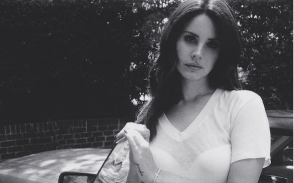
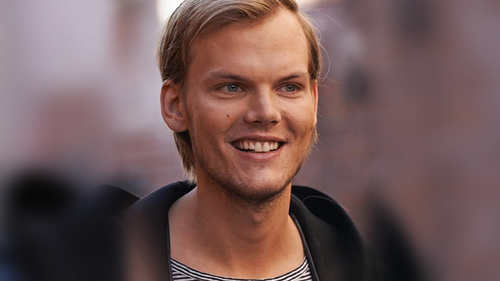
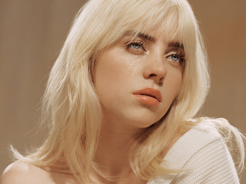

Kodaline are an Irish rock band. Originally known as 21 Demands,
the band adopted their current name in 2012 to coincide with the changing of their music.
The group comprises Steve Garrigan, Mark Prendergast, Vincent May and Jason Boland.
Garrigan and Prendergast grew up in Swords, Dublin, and have known each other since childhood.
May and Garrigan attended Colaiste Choilm CBS, Swords,
where they participated in battles
of the bands. Boland joined the group in 2012. They have released four albums:
Kodaline

Lana Del Ray
Elizabeth Woolridge Grant (born June 21, 1985), known professionally as Lana Del Rey,
is an American singer-songwriter. Her music is noted for its stylized,
cinematic quality and exploration of themes of sadness, tragic romance, glamor, and melancholia, containing many references to pop culture, particularly 1950s and 1960s Americana.
cinematic quality and exploration of themes of sadness, tragic romance, glamor, and melancholia, containing many references to pop culture, particularly 1950s and 1960s Americana.

Avicii
Tim Bergling (8 September 1989 – 20 April 2018), known by his stage name Avicii,
was a Swedish DJ, remixer, record producer, musician, and songwriter.
At the age of 16, Bergling began posting his remixes on electronic music forums, which led to his first record deal.He rose to prominence in 2011 with his single "Levels".
His debut studio album, True (2013), blended electronic music with elements of multiple genres and received generally positive reviews. It peaked in the top ten in more
than fifteen countries and topped international charts; the lead single, "Wake Me Up, topped most music markets in Europe and reached number four in the United States.
At the age of 16, Bergling began posting his remixes on electronic music forums, which led to his first record deal.He rose to prominence in 2011 with his single "Levels".
His debut studio album, True (2013), blended electronic music with elements of multiple genres and received generally positive reviews. It peaked in the top ten in more
than fifteen countries and topped international charts; the lead single, "Wake Me Up, topped most music markets in Europe and reached number four in the United States.

Billie Eilish
Billie Eilish Pirate Baird O'Connell (born December 18, 2001) is an American singer and
songwriter. She first gained public attention in 2015 with her debut single "Ocean Eyes",
which was subsequently released by Darkroom, a subsidiary of Interscope Records. The song was written and produced by her brother, Finneas O'Connell, with whom she frequently collaborates
on music and in live shows. Her debut extended play, Don't Smile at Me (2017), was commercially successful and charted within the top 15 in the US, UK, Canada, and Australia.
which was subsequently released by Darkroom, a subsidiary of Interscope Records. The song was written and produced by her brother, Finneas O'Connell, with whom she frequently collaborates
on music and in live shows. Her debut extended play, Don't Smile at Me (2017), was commercially successful and charted within the top 15 in the US, UK, Canada, and Australia.
